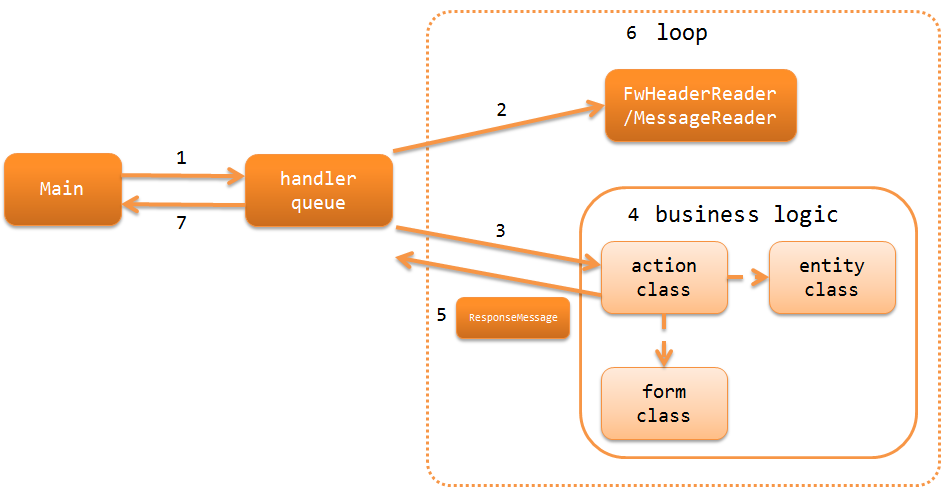

5.1.1. Architecture Overview¶
Table of contents
MOM messaging provides a function to execute an action corresponding to the request ID for request messages sent from the outside. The message queue used for MOM messaging is referred to as MQ.
MOM messaging is divided into two types:
- Synchronous response messaging
- A response message is created for the request message and sent to MQ based on the execution result of business processing. Used when an immediate response is required, such as for permission business.
- Asynchronous response messaging
- The response message is not sent, and the request message contents received from MQ are stored in a table in the DB. Business process is executed by a subsequent batch using this table as the input. For information on batch, see Messaging Using Tables as Queues.
Tip
Asynchronous response messaging is a very simple process of storing the contents of messages in a table, so the action class provided by the framework can be used without any change. In that case, only the required configuration needs to be configured, and coding is not required.
Important
Only fixed-length data of General Data Format can be handled by MOM messaging.
MOM messaging uses the MOM messaging function of the library to send and receive messages. For details, see MOM Messaging .
5.1.1.1. Configure MOM messaging¶
The configuration of MOM messaging is exactly the same as Nablarch Batch Application. See Configuration of Nablarch Batch Application .
5.1.1.2. Specify action and request ID based on the request message¶
MOM messaging uses a specified field in the request message as the request ID. Since the request ID does not include a hierarchical structure unlike request paths of web applications, use Request Dispatch Handler to specify the action class package and class name suffix in the configuration, and dispatch it to the class corresponding to the request ID.
The request ID must be included in the framework control header in the request message. For details, see framework control header .
5.1.1.3. Process flow of MOM messaging¶
The process flow of MOM messaging, from receiving a request message to returning a response message, is shown below. The only difference with asynchronous response messaging is that no response message is returned.
{kind=link}
- The common start-up launcher (Main) executes the handler queue.
- The data reader (FwHeaderReader / MessageReader) monitors the message queue, reads the received messages, and provides request messages one by one.
- The Configuration of Nablarch Batch Application configured in the handler queue specifies the action class to be processed based on the request ID included in the specified field of the request message, and adds it to the end of the handler queue.
- The action class executes business logic for each request message using a form class and an entity class.
- The action class returns ResponseMessage , which represents the response message.
- Steps 2 to 5 are repeated until there is a process stop request.
- status code → process exit code conversion handler (StatusCodeConvertHandler) set in the handler queue converts the status code of the process result into the process exit code, and the process exit code is returned as the processing result of MOM messaging.
5.1.1.4. Handlers used in MOM messaging¶
Nablarch provides several handlers as standard, which are required for building MOM messaging. Build the handler queue in accordance with the requirements of the project (a custom handler will have to be created for the project depending on the requirements)
For details of each handler, refer to the link.
- Handlers that convert request and response
- Handlers that control process execution
- Handlers associated with messaging
- Handlers associated with database
- Error handling handler
- Others
5.1.1.4.1. Minimum handler configuration for synchronous response messaging¶
When building a synchronous response messaging, the minimum required handler queue is as below. With this as the base, add standard handlers of Nablarch or custom handlers created in the project according to the project requirements.
| No. | Handler | Thread | Request process | Response process | Exception handling |
|---|---|---|---|---|---|
| 1 | Status Code → Process End Code Conversion Handler | Main | Converts the status code to process exit code. | ||
| 2 | Global Error Handler | Main | Outputs the log for a runtime exception or error. | ||
| 3 | Multi-thread Execution Control Handler | Main | Creates a sub-thread and executes the process of the subsequent handler in parallel. | Waits for normal termination of all threads. | Waits for the current thread to complete and rethrows the cause exception. |
| 4 | Retry Handler | Sub | Catches a runtime exception that can be retried, and provided that the retry limit has not been reached, re-executes the subsequent handler. | ||
| 5 | Messaging Context Management Handler | Sub | Acquires MQ connection. | Releases the MQ connection. | |
| 6 | Database Connection Management Handler | Sub | Acquires DB connection. | Releases the DB connection. | |
| 7 | Loop Control Handler in Request Thread | Sub | Executes subsequent handlers repeatedly. | Restores the handler queue contents and continues the loop. | Stops the loop only when there is a process stop request or a fatal error occurs. |
| 8 | Thread Context Variable Delete Handler | Sub | Deletes all the values configured on the thread local by the Thread Context Variable Management Handler . | ||
| 9 | Thread Context Variable Management Handler | Sub | Initializes thread context variables such as request ID and user ID from command line arguments. | ||
| 10 | Process Stop Control Handler | Sub | If the process stop flag of the request table is on, a process stop exception (ProcessStop) is thrown without performing the subsequent handler process. | ||
| 11 | Message Response Control Handler | Sub | Creates messages based on the content of response messages returned from the subsequent handlers and sends it to MQ. | Creates messages based on the content of the errors and sends it to MQ. | |
| 12 | Data Read Handler | Sub | Use a data reader to read one request message and pass it as an argument of the subsequent handler. Also, the execution ID numbered is numbered. | After generating output of the read message as a log, rethrows the original exception. | |
| 13 | Request Dispatch Handler | Sub | Determines the action to call based on the request ID included in request messages. | ||
| 14 | Transaction Control Handler | Sub | Begin a transaction | Commits the transaction. | Rolls back a transaction. |
5.1.1.4.2. Minimum handler configuration for asynchronous response messaging¶
When building a asynchronous response messaging, the minimum required handler queue is as below. With this as the base, add standard handlers of Nablarch or custom handlers created in the project according to the project requirements.
The minimum handler configuration for asynchronous response messaging is the same as synchronous response messaging, except for the following handlers.
Important
An error response cannot be sent if the storage of messages fails in asynchronous response messaging. Hence, the message is returned to the queue temporarily and retried until the predetermined number of times is reached. For this reason, the registration process for the DB and queue operation must be handled as one transaction (two-phase commit control). Specifically, change the configuration of Transaction Control Handler and replace with implementation that supports two-phase commit.
Nablarch provides an adapter for two-phase commit using WebSphere MQ. For details, see IBM WebSphere MQ Adapter .
| No. | Handler | Thread | Request process | Response process | Exception handling |
|---|---|---|---|---|---|
| 1 | Status Code → Process End Code Conversion Handler | Main | Converts the status code to process exit code. | ||
| 2 | Global Error Handler | Main | Outputs the log for a runtime exception or error. | ||
| 3 | Multi-thread Execution Control Handler | Main | Creates a sub-thread and executes the process of the subsequent handler in parallel. | Waits for normal termination of all threads. | Waits for the current thread to complete and rethrows the cause exception. |
| 4 | Retry Handler | Sub | Catches a runtime exception that can be retried, and provided that the retry limit has not been reached, re-executes the subsequent handler. | ||
| 5 | Messaging Context Management Handler | Sub | Acquires MQ connection. | Releases the MQ connection. | |
| 6 | Database Connection Management Handler | Sub | Acquires DB connection. | Releases the DB connection. | |
| 7 | Loop Control Handler in Request Thread | Sub | Executes subsequent handlers repeatedly. | Restores the handler queue contents and continues the loop. | Stops the loop only when there is a process stop request or a fatal error occurs. |
| 8 | Thread Context Variable Delete Handler | Sub | Deletes all the values configured on the thread local by the Thread Context Variable Management Handler . | ||
| 9 | Thread Context Variable Management Handler | Sub | Initializes thread context variables such as request ID and user ID from command line arguments. | ||
| 10 | Process Stop Control Handler | Sub | If the process stop flag of the request table is on, a process stop exception (ProcessStop) is thrown without performing the subsequent handler process. | ||
| 11 | Transaction Control Handler | Sub | Begin a transaction | Commits the transaction. | Rolls back a transaction. |
| 12 | Data Read Handler | Sub | Use a data reader to read one request message and pass it as an argument of the subsequent handler. Also, the execution ID numbered is numbered. | After generating output of the read message as a log, rethrows the original exception. | |
| 13 | Request Dispatch Handler | Sub | Determines the action to call based on the request ID included in request messages. |
5.1.1.5. Data readers used in MOM messaging¶
Nablarch provides several data readers as standard, which are required for building MOM messaging. For details of each data reader, refer to the respective links.
- FwHeaderReader (reads the framework control header from the message)
- MessageReader (reads messages from MQ)
Tip
If the above data readers cannot meet the project requirements, create a class that implements the DataReader interface in the project.
5.1.1.6. Action used in MOM messaging¶
Nablarch provides several action classes as standard, which are required for building MOM messaging. For details of each action class, refer to the respective links.